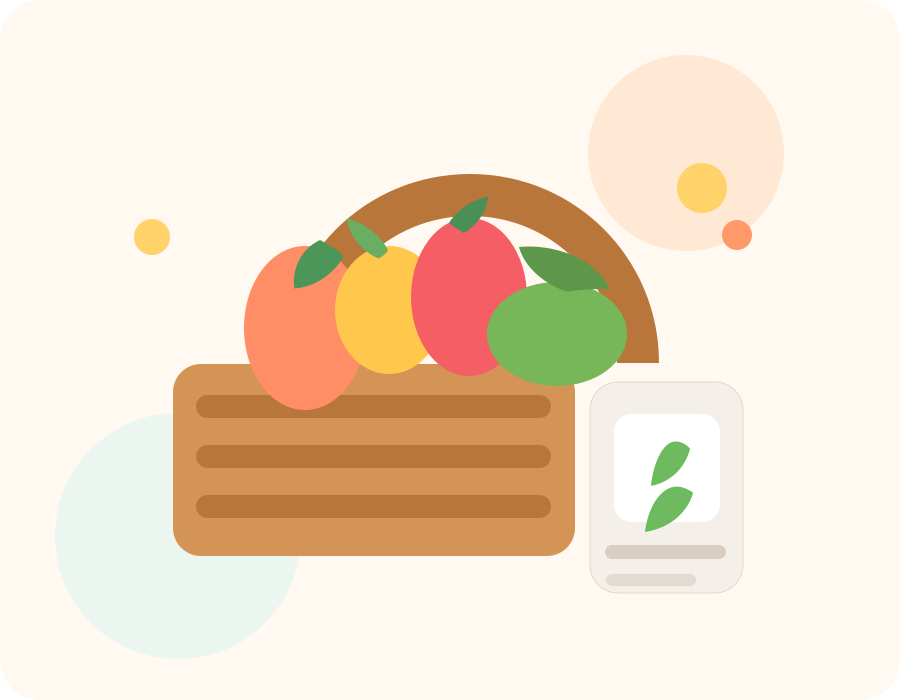

ONLINE
SKANER PRODUKTÓW
Skanuj produkty i sprawdzaj co jest dobre, a co złe
Styl inspirowany KuchnJA, ale zamiast przepisów masz tutaj skanowane produkty, zdjęcia opakowań, ocenę składu oraz szczegółową analizę składników.

PANEL SKANERA
Znajdź produkt po kodzie
Gotowe do skanowania.
NAJNOWSZE SKANY
Ostatnio zeskanowane produkty
Brak historii.